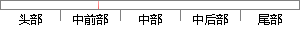

建立网络通信连接至少要一对端口号(socket)。
片段位置图

相似结果|
相似片段 1：了一个单向连接，由】P地址和端口号组成；而一对．sockel标识则标识了一个双向连接，由源IP地址，源端口号，目的地址，目的端口号组成。socket在应用和网络协议之间担当了通信连接点作用，应用程序在建立
相似片段 2：。一般C／S模式从连接到断开分为三个阶段：即连接建立阶段、数据传输阶段、连接拆除阶段。在C／S模式中，至少需要一对Socket，分为客户端Socket和服务器端Socket，就像用电话交流时处于双方
相似片段 3：的Socket系统调用。本系统应用的是面向连接的Socket调用，它对应于TCP／IP协议族中的TCP协议，该调用首先在客户机和服务器间创建一个连接并建立一条通信链路，以后的网络通信操作完全在这一对进程之间进行，通信完毕后关闭此连接过程面向连接的Socket通信机制模型如图3—7所示。
|
※ 片段修改建议 ※
近似词参考：- 建立：成立 创立 创设 建树 确立 设立建设 竖立 创建 树立
- 连接：毗连 毗邻
- 至少：最少
系统自动生成语句：成立网络通信毗连最少要一对端口号(socket)。
注：本片段修改建议为系统自动生成，仅供参考。